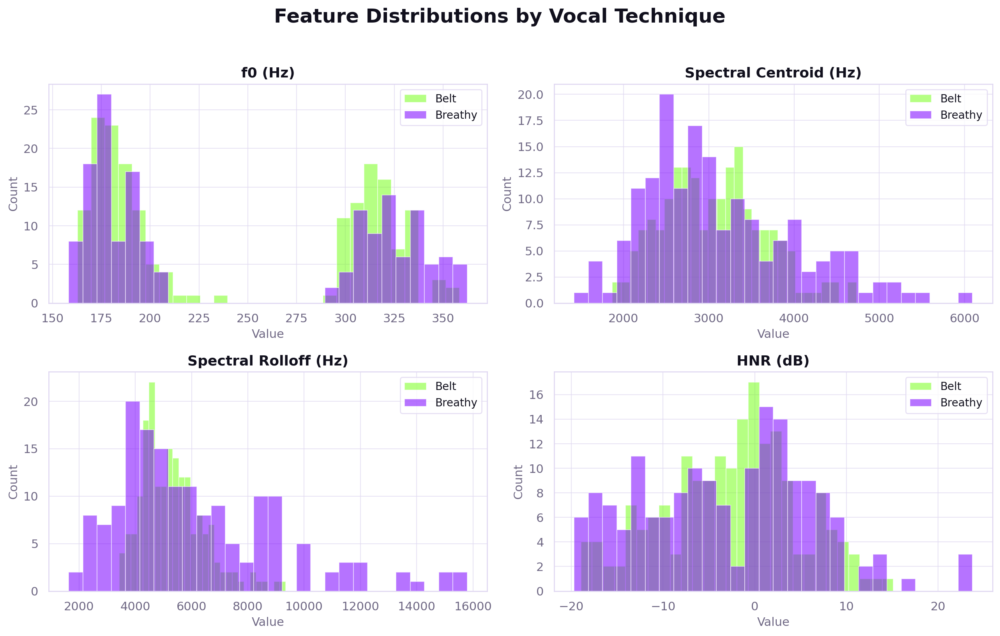
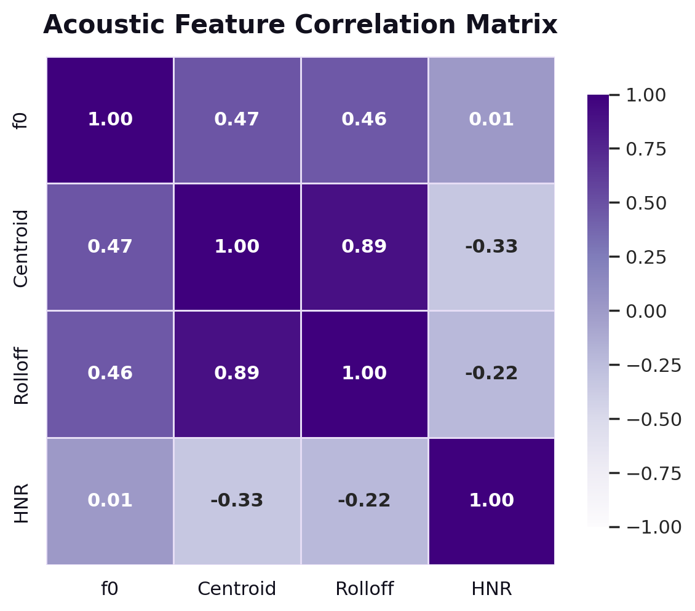

Class distributions, acoustic feature descriptions, and correlation analysis of the VocalSet feature set.
VocalSet is a research dataset of professional singers performing musical scales, arpeggios, long tones, and song excerpts across 17 distinct vocal techniques. We subset the full dataset to the two techniques with the clearest acoustic contrast and most direct mapping to energy level: belt (powerful, high-pressure singing) and breathy (soft, airy singing).
Before analysis, we removed clips with silent passages, HNR values below −20 dB (a threshold indicating noise from the feature extraction tool rather than real vocal sound), pitch values outside the 50–500 Hz range typical of singing voices, and any clips with missing spectral measurements. The resulting dataset is approximately balanced between the two classes.
Raw audio clips were processed through a four-step pipeline before any modeling was performed.
Quality filtering removed extraction artifacts and non-vocal samples before modeling.
Each audio clip is represented as 17 numeric features: 4 interpretable acoustic measurements and 13 MFCC coefficients. MFCCs capture the tone color and texture of the voice in a compact form that reflects how humans perceive timbre, going well beyond what simple pitch or brightness statistics alone can describe.
| Feature | Type | Unit | What it measures | Expected difference (belt vs. breathy) |
|---|---|---|---|---|
| f0 | Acoustic | Hz | Fundamental frequency, i.e. the perceived pitch of the voice. Computed using the YIN algorithm and averaged across the clip. | Belt higher. Powerful chest-dominant singing tends to produce a higher, more projected pitch. |
| spectral_centroid | Acoustic | Hz | The "center of gravity" of the sound's frequency content. A higher value means the voice sounds brighter or sharper. | Belt higher. The strong, full harmonics of belt singing shift more energy toward higher frequencies. |
| spectral_rolloff | Acoustic | Hz | The frequency below which 85% of the sound's energy falls. Higher values mean the voice has more high-frequency content. | Belt higher. Closely tracks spectral centroid (r = 0.89); both reflect overall timbral brightness. |
| HNR | Acoustic | dB | Harmonic-to-Noise Ratio. Measures how clean and tonal the voice sounds versus airy and noisy. Computed using Praat. | Belt higher. Belt singing involves complete vocal fold closure, producing a cleaner, more periodic sound. Breathy singing lets air escape, adding noise. |
| mfcc_0 – mfcc_12 | MFCC | (unitless) | 13 Mel-Frequency Cepstral Coefficients. A compact description of the overall shape of the voice's frequency spectrum, inspired by how the human ear perceives sound. mfcc_0 reflects overall loudness; mfcc_1 through mfcc_12 capture progressively finer details of vocal texture and tone color. | Strong class separation. Adding MFCCs raised accuracy from around 70% to 92.8%, confirming they capture the timbral differences that simpler features miss. |
Per-feature distributions for the belt and breathy classes plotted side by side. Where the two distributions overlap, a single feature cannot reliably tell the classes apart. Where they separate cleanly, the feature carries discriminative power.

Figure 1 — Feature Distributions (Belt vs. Breathy)
Histogram bins colored by class. Features z-score normalized for display.
f0 (pitch) and HNR (vocal cleanliness) show the clearest separation between the two classes. Belt vocals cluster at higher pitch values and higher HNR scores, which is consistent with the powerful, closed-fold technique they involve.
Spectral centroid and rolloff distributions overlap considerably between classes, confirming they are weaker individual predictors. They also carry nearly identical information (r = 0.89), so they largely duplicate each other's contribution to the model.
The MFCC coefficients, particularly mfcc_0 (which reflects overall loudness) and mfcc_1, show clear two-peaked distributions with the belt and breathy classes peaking in distinct regions. This visual separation is the main reason accuracy jumps so sharply when MFCCs are added to the feature set.
Pearson correlation matrix across the four primary acoustic features. Values close to +1 or -1 indicate that two features move together and carry overlapping information. Values near zero indicate features that measure independent aspects of the voice.

Figure 2 — Pearson Correlation Heatmap (17 features)
Values range from −1 (inverse) to +1 (perfect correlation). White = no correlation.
The strongest correlation is between spectral_centroid and spectral_rolloff (r = 0.89). Both features capture the same underlying property, how bright or sharp the voice sounds, and carry nearly identical information. This redundancy is explored further through PCA on the Findings page.
Consecutive MFCC coefficients (such as mfcc_1 and mfcc_2) show moderate positive correlation. This is expected: the Mel filterbank underlying MFCCs uses overlapping frequency bands, so adjacent coefficients naturally share some information. Even so, each coefficient captures a distinct scale of timbral detail, and the full set together provides strong discriminative power.
f0 (pitch) and HNR (vocal cleanliness) are only weakly correlated with the MFCC block, confirming that they contribute independent information. Correlation values are reported using Pearson's r coefficient.
Spectral centroid and spectral rolloff are correlated at r = 0.89. Both features measure the same underlying property (timbral brightness) and contribute nearly identical information to linear classifiers.
Praat's HNR algorithm returned values below −20 dB for some clips, which indicates a failed extraction rather than a genuine vocal measurement. Those rows were removed before modeling to keep the HNR feature distribution reliable.
Using only the four base acoustic features, Random Forest accuracy topped out around 70%. Adding 13 MFCC tone-texture coefficients pushed Logistic Regression to 91.4% and XGBoost to 92.8%, confirming that capturing vocal texture is the key to distinguishing these two singing styles.